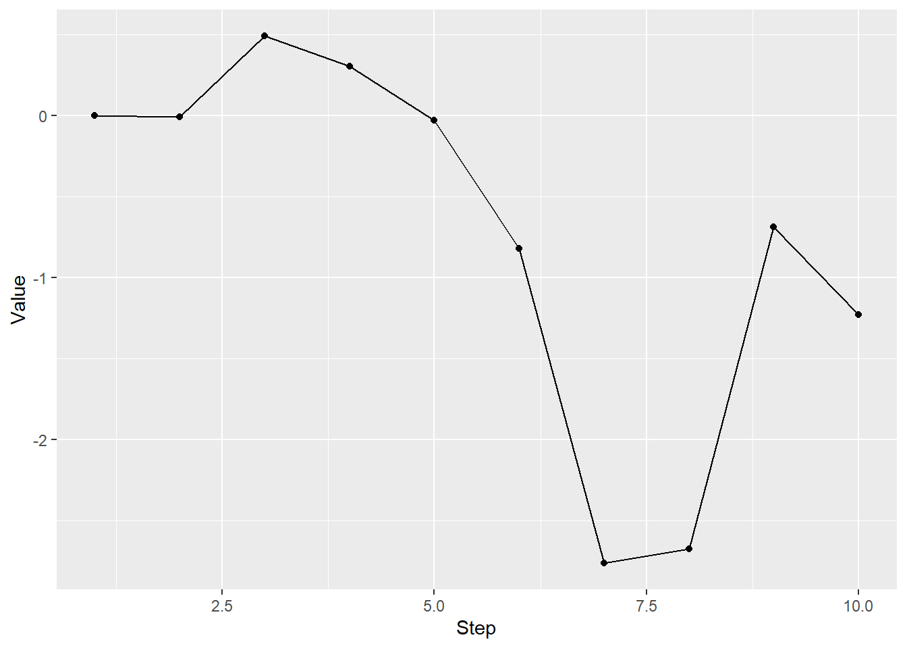

9 Controling computation flow
Grab the exercise notebook before we start.
One of the most powerful features of R is that it is vector-based. Remember, everything is a vector (or a list). In the previous seminars you saw you can apply a function, a filter, or perform a computation on all values of a vector or all rows in a table in a single call. However, sometimes, you need to go over one value or row at a time explicitly. For example, if you working with a time-series, it might be easier to use an explicit for loop to compute current value based on previous state of the system. However, such instances are fairly rare, so the general rule for R is “you probably do not need a loop”. Below, we will go through various tools that render explicit loops redundant, but cover the loops themselves as well as conditional control statements (if-else) and functions (ifelse, case_when).
Note that the material does not cover a while (
9.1 rep()
The most basic repetition mechanism in R is rep() function. It takes a vector and repeats it specified number of times.
## [1] 1 2 3 1 2 3 1 2 3 1 2 3Alternatively, you can repeat each element specified number of times before repeating the next one via each parameter. The difference between options lies only in the order of elements in the new vector. As you can see both vectors have the same length and each individual value is repeated four times.
## [1] 1 1 1 1 2 2 2 2 3 3 3 3You can specify length of the output vector via length.out. When combined with times it can be useful for producing truncated vectors. E.g., when we repeat a three element vector but we want to get ten values. Using times only, we can get either nine (times = 3) or twelve (times = 4), not ten. length.out = 10 makes it happen.
## [1] 1 2 3 1 2 3 1 2 3 1However, you can also use subsetting of a new vector to achieve the same end.
## [1] 1 2 3 1 2 3 1 2 3 1You should be more careful when combining length.out with each, as each value is repeated each times and, if length.out is longer, the same sequence is repeated again. Could be confusing and you might get a very unbalanced repeated sequence.
## [1] 1 1 1 1 1 1 1 1 2 2Do exercise 1.
9.2 Repeating combinations
To create a table with all combinations of values, you can use either base R expand.grid() or tidyr’s implementation expand_grid(). The latter is a bit more robust and can expand even tables and matrices (but see the documentation for subtle differences in implementation and output).
The usage is very straightforward, you provide column names and values and you get all combinations of their values.
knitr::kable(grid_base)| gender | handidness | colorblindness |
|---|---|---|
| female | right | TRUE |
| male | right | TRUE |
| female | left | TRUE |
| male | left | TRUE |
| female | right | FALSE |
| male | right | FALSE |
| female | left | FALSE |
| male | left | FALSE |
expand_grid() works the same they but for the order of values within columns.
expand_grid(gender=c("female", "male"),
handidness=c("right", "left"),
colorblindness=c(TRUE, FALSE))
knitr::kable(grid_tidyr)| gender | handidness | colorblindness |
|---|---|---|
| female | right | TRUE |
| female | right | FALSE |
| female | left | TRUE |
| female | left | FALSE |
| male | right | TRUE |
| male | right | FALSE |
| male | left | TRUE |
| male | left | FALSE |
Do exercise 2.
9.3 For loop
You can loop (iterate) over elements of a vector or list via a for loop, which is very similar to for-loops in other programming languages. However, use of the for loop in R is fairly rare, because vectors are a fundamental building block of R and, therefore, it is inherently vectorized (you can do the same thing to all values, not to one value at a time). In a sense, for loop is very un-R, so if you find yourself using it, consider whether there is a simpler or more expressive way to do this. At the same time, if for loop is the simplest, clearest, or more robust way to write you code, by all means, use it!
The general format is
for(loop_variable in vector_or_list){
...some operations using loop_variable that
changes its value on each iteration using
values from the vector or list...
}Note the curly brackets. We used them before to put the code inside a function. Here, we use them to put the code inside the loop. The loop (the code inside curly brackets) is repeated as many times as the number of elements in a vector or a list with a loop variable62 getting assigned each vector/list value on each iteration. Thus, to print each value of a vector we can do
## [1] 1
## [1] 5
## [1] 200Here, we have three elements in a vector, therefore the code inside curly brackets is repeated three times with the variable a_number taking each value in turn. I.e., a_number is equal to 1 on a first iteration, 5 on a second, 200 on the third. Note that the code above is equivalent to just assigning one value at a time to a_number and calling print() function three times.
a_number <- 1
print(a_number)## [1] 1
a_number <- 5
print(a_number)## [1] 5
a_number <- 200
print(a_number)## [1] 200As you can see, it does not really matter how you assign a value to a variable and repeat the code. However, the for loop approach is much more flexible, is easier to read and to maintain. I.e., let us assume that you decided to alter the print() call with cat() instead. In the for loop version there is just one line to take care of. In the copy-paste version, there are three lines you need to alter. And imagine if you need to repeat the same code a hundred or thousand times, copy-paste is clearly not a viable solution.
Also note that you might be interested in repeat the code inside the for loop given number of times but are not interested in a loop variable and values that it takes. For example, we might want to repeat print("Ho!") three times (because it is Christmas time and “Ho! Ho! Ho!” is what Santa Clause says). In this case, we still need a vector with three elements that we can loop over but we do not care what these three elements are.
for(temp in 1:3){
print("Ho!")
}## [1] "Ho!"
## [1] "Ho!"
## [1] "Ho!"Note that we are not using variable temp inside of the loop and it has no effect on the code inside the curly brackets. Which is why we can use any three values, as it is their total number that matters, not the values themselves.
## [1] "Ho!"
## [1] "Ho!"
## [1] "Ho!"or
## [1] "Ho!"
## [1] "Ho!"
## [1] "Ho!"In short, number of elements in the vector determines how many times the code inside the loop will be repeat. Vector elements are stored in the loop variable on each iteration and you can either use it (a_number example above) or ignore them (“Ho! Ho! Ho!”) example.
Do exercises 3 and 4.
One for a typical scenarios for the loop variable is when it is used as an index to access an element of a vector or a list. You can build a vector of indexes via start:stop sequence tool we used for slicing. You can compute a length of an object via length() function. For a data.frame or a tibble, you can figure out number of rows and columns via, respectively, nrow() and ncol() functions.
vector_of_some_numbers <- c(1, 5, 200)
for(index in 1:length(vector_of_some_numbers)){
print(vector_of_some_numbers[index])
}## [1] 1
## [1] 5
## [1] 200Do exercise 5.
You can also nest loops
## A 1
## A 2
## B 1
## B 2
## C 1
## C 2Do exercise 6.
One scenario when loops are particularly advantages is when a current value depends on a previous one (or many previous values). In this case, a new value depends on the previous one and, in turn, determines the following ones and they cannot be computed before it is known. This means that vectorized approach that applies the computation to all values in parallel will not work and we need to perform the computation in a sequantial manner.
In the next exercise, use for loop to create a random walk. It should start at zero (so, initial value for your variable should be zero). For each next step, draw a random value from a normal distribution using previous value as a mean (decide on the standard deviation yourself). The function you are looking for is rnorm()). Generate a ten-step random walk, that might look like this (you can my plot replicate exactly, if you set.seed() to 1977):

Do exercise 7.
9.4 Conditional statement
As in all other programming languages, you can control the flow of execution using if-else statements. The general usage is as follows.
if (some_condition) {
# code runs if some_condition is TRUE
} else {
# code runs if some_condition is FALSE
}The rules are the same as for logical indexing, so we can define our condition using mathematical comparisons.
x <- -3
if (x > 0) {
cat("X is definitely greater than zero")
} else {
cat("X is not greater than zero.")
}## X is not greater than zero.However, be aware that the if uses a single logical value. If you have more than one value, it stops with an error63.
## Error in if (x < 0) {: the condition has length > 1As in logical indexing, you can combine several conditions using logical operators such as and && or or ||.
For example, we can check whether x is smaller than zero but larger than -10.
## Bingo!However, be aware that R has both &/| and &&/|| versions of and and or logical operators (single versus double symbols). Both perform logical operations on vectors but double-symbol works only for a single value. E.g., single-symbol returns TRUE/FALSE for each value of x
x <- c(10, -3, -11)
(x < 0) & (x > -10)## [1] FALSE TRUE FALSE&& and || will generate an error if vectors are longer64.
# This works
x <- -3
(x < 0) && (x > -10)## [1] TRUE
# This generates and error
x <- c(10, -3, -11)
(x < 0) && (x > -10)## Error in (x < 0) && (x > -10): 'length = 3' in coercion to 'logical(1)'Let us combine for loop with if-else operator. Generate a vector of ten normally distributed values (again, rnorm() is the function). Loop over them in a for loop and print() or cat() "Positive" if a value is larger than zero and "Not positive" if not. The results should look like this65
## [1] 0.03003683 1.22390943 1.71573769 -0.89994016 0.55507190 0.42319195
## [7] 0.82993426 -1.28614375 1.21511589 -0.05815403## [1] "Positive"
## [1] "Positive"
## [1] "Positive"
## [1] "Not positive"
## [1] "Positive"
## [1] "Positive"
## [1] "Positive"
## [1] "Not positive"
## [1] "Positive"
## [1] "Not positive"Do exercise 8.
9.5 ifelse()
As I wrote above, strength of R lies in built-in vectorization that typically renders loops unnecessary. Although we used the for loop to apply comparison to one element at a time, R has function ifelse() that performs the same task on vectors. It format is ifelse(logical-vector, values-if-true, values-if-false) where the logical vector of TRUE and FALSE values can be produced via a comparison. For example, we can classify letters into "Vowel" and "Consonant" using %in% to check whether each letter is in the vowels list (note the %, this distinguished %in% for matching from in of the for loop).
vowels <- c("a", "e", "i", "o", "u")
letters <- c("a", "b", "c", "d", "e", "f")
ifelse(letters %in% vowels, "Vowel", "Consonant")## [1] "Vowel" "Consonant" "Consonant" "Consonant" "Vowel" "Consonant"Note that vectors values-if-true and values-if-false must not be of equal length. For example, one can use ifelse() to replace only vowels in the original vector but keep consonant letter as is by using letters vector for values-if-false
## [1] "Vowel" "b" "c" "d" "Vowel" "f"However vectors values-if-true and values-if-false ideally should either match the length of the logical comparison vector or have a single value. Otherwise, they will be recycled which might lead to confusing results. E.g., here, can you figure out when "Consonant1" and "Consonant2" are used?
## [1] "Vowel" "Consonant2" "Consonant1" "Consonant2" "Vowel"
## [6] "Consonant2"Use ifelse() to replicate exercise 8 without a loop.
Do exercise 9.
9.6 case_when
Function ifelse() is useful when you have just two outcomes. You can use nested ifelse calls, just like you can use nested if-else statements but it becomes awkward and hard to read very fast. Instead, you can use function case_when() from dplyr library. Here, you can use as many conditions as you want. The general format is
For example, the internet tells me that letter y is complicated, as it can be either a consonant or a vowel depending on a word. Thus, we can label it as “Complicated” via case_when() (note the vectorized nature of it, as it applies this comparison to one element of the vector at a time)
vowels <- c("a", "e", "i", "o", "u")
letters <- c("a", "b", "c", "d", "e", "f", "y")
case_when(letters == "y" ~ "Complicated",
letters %in% vowels ~ "Vowel",
TRUE ~ "Consonant")## [1] "Vowel" "Consonant" "Consonant" "Consonant" "Vowel"
## [6] "Consonant" "Complicated"Note the last condition that is always TRUE, it looks odd but this servers as a “default” branch: if you got that far, all other conditions must be FALSE, so this must be TRUE (you have no other options left).
Do exercise 10.
9.7 Breaking out of the loop
The code inside the for loop is typically repeated for every value of the vector that you have supplied. However, there is a way to break out of it using a break statement. This stops execution of the code inside of the loop immediately and continues with the code immediately after the loop.
## [1] "This will be exected"
print("Now to the code AFTER the loop")## [1] "Now to the code AFTER the loop"Note that in this case, the code was executed (incompletely!) only once. Typically, break is used in combination with the if-else statement to break out of the loop, if a certain condition is met. Let us practice. Again, generate ten normally distributed numbers, loop over them and print each one. However, break after the fifth value. For this, you need to loop over indexes of values (that go from 1 to the length() of your vector). Thus, you loop variable will contain an index of each element of x (because of that I called it ix) and you need to use it to get a value at this position within the vector. If that index is equal to 5, break out of the loop.
For the ten values I’ve generated above, the output will be the following (“Done for today” is printed after the loop, also I could have first printed a value and then exited the loop, that is a analysis logic question, not a technical one).
## [1] 0.03003683
## [1] 1.223909
## [1] 1.715738
## [1] -0.8999402
print("Done for today")## [1] "Done for today"Do exercise 11.
9.8 Using for loop to load and join multiple data files
Your analysis starts with loading the data. Quite often, data for individual participants is stored in different files but with identical structure, so you need code that figures out which files you need to load, loads them one at a time and then binds them to one final table. Using a for loop is not the most elegant way to implement this but it does the job and gives you another example of how loops can be useful. I will walk you through details and then you We will implement the code that loads and merges individual files for persistence study. Download the persistence.zip and unzip into Persistence subfolder (we do not want to create a mess in your main folder!).
First, you need to have a character vector with relevant file names. Package you are looking for is fs (for File System). It has everything you need to work with the file system, including working with file names (dropping or adding path, extension, etc.), creating/moving/deleting files, checking whether file exists, and what not. One function that I use the most is dir_ls() that list files in a specified folder. The two parameters you need are path to your folder (you can and should use a relative path) and, optionally, glob filter string. The latter is a globbing wildcard pattern, where * stands for “any sequence of characters” and ? stand for “one arbitrary character. For a csv file, this pattern would be "*.csv". Test this single function call using appropriate path and glob parameters and make sure you get all the files in Persistence folder.
results or reports) and initialize it to an empty data.frame() (or an empty tibble). You loop over file names, read one file at a time (don’t forget to specify column types), and then use bind_rows() to combine the full table and the new table you loaded. Note that bind_rows() returns a new table, so you need to assign it back to the original full table variable. Once you are done, your table should have 5232 rows and twelve columns.
| Participant | Session | Block | Trial | OnsetDelay | Bias | Shape1 | Shape2 | Response1 | Response2 | RT1 | RT2 |
|---|---|---|---|---|---|---|---|---|---|---|---|
| AKM1995M | 2019-06-12-14-07-17 | 0 | 0 | 0.5746952 | left | stripes-8 | stripes-4 | right | left | 5.0554813 | 1.0238089 |
| AKM1995M | 2019-06-12-14-07-17 | 0 | 1 | 0.5741707 | left | stripes-4 | heavy poles sphere | left | right | 2.9692460 | 0.8239294 |
| AKM1995M | 2019-06-12-14-07-17 | 0 | 2 | 0.5082200 | left | stripes-2 | stripes-2 | right | left | 3.1623310 | 0.6718403 |
| AKM1995M | 2019-06-12-14-07-17 | 0 | 3 | 0.6065058 | right | stripes-8 | stripes-2 | right | right | 1.0211627 | 0.5919555 |
| AKM1995M | 2019-06-12-14-07-17 | 0 | 4 | 0.5359504 | left | stripes-2 | heavy poles sphere | right | right | 0.9426957 | 0.6157635 |
| AKM1995M | 2019-06-12-14-07-17 | 0 | 5 | 0.6435367 | right | stripes-4 | stripes-4 | right | right | 1.1646056 | 0.6398231 |
Do exercise 12.
9.9 Apply
As noted above, for loops do the job by might not be the most elegant way of doing things. In R, you can apply a function to each row or column of a matrix. In addition, there are more case-specific versions of it, such lapply.
The function is called apply because you apply it to values of a vector. In a sense, you have been applying functions the whole time by calling them. For example, we might compute a sinus of a sequence of numbers as
## [1] 0.000000e+00 7.071068e-01 1.000000e+00 7.071068e-01 1.224606e-16Or, we can apply sinus function to a number sequence (note that I pass the name of the function alone sin but do not call it, so no round brackets!)
## [1] 0.000000e+00 7.071068e-01 1.000000e+00 7.071068e-01 1.224606e-16You might ask, what is then the point to use apply? Not much for simple vector cases like this, but it is very useful when you have two dimensional data, as you can apply a function along horizontal (rows) or vertical (columns) margin. For example, imagine you need to compute an average (or median, or any other quantile) of each row or column in a matrix (something you might do fairly often for posterior samples in Bayesian statistics).
Let us create a simple 3 by 4 matrix of normally distributed random numbers.
## [,1] [,2] [,3] [,4]
## [1,] -1.306076e-05 -0.9815949 0.3981706 -0.1809577
## [2,] 1.880631e-02 -0.4210554 -1.2544423 -0.2319481
## [3,] 2.429102e+00 -1.1964317 0.2265607 0.5361628We would expect median value of any row or column to be 0 but because we have so few data points, they will be close but not exactly zero. Computing median for each row (we should get three numbers)
apply(a_matrix, MARGIN = 1, FUN = median)## [1] -0.0904854 -0.3265017 0.3813618Similarly for a column (here, it should be four numbers)
apply(a_matrix, MARGIN = 2, FUN = median)## [1] 0.01880631 -0.98159487 0.22656072 -0.18095773I will not go into any further details on these functions, concentrating on similar functionality by purrr package. However, if you find yourself working with matrices or needing to apply a function to rows of a data frame, apply might be a simpler solution. Keep this option in mind, if you feel that either looping or purrring looks inadequate.
9.10 Purrr
Package purrr is part of the tidyverse. It provides functional programming approach similar to apply but it easier to use (IMHO) and it has a more explicit and consistent way to describe and combine the output. Language-wise, you do not apply a function, you use it to map inputs on outputs66
The basic map() function always returns a list but you can explicitly state that you expect function to return a number (map_dbl()) and all outputs will be combined into a numeric vector. And, unlike apply, map_dbl() will generate an error if outputs cannot be converted to numeric.
The basic call is similar to apply but is easier to use as you can explicitly address current value via . variable (as in other parts of Tidyverse) and you can write a “normal” function call, prefixing it with a ~. Here is the example of computing the sinus again. First, same a apply via function name only
## [1] 0.000000e+00 7.071068e-01 1.000000e+00 7.071068e-01 1.224606e-16Now, we a magic tilde ~. Note an explicit call to sin() function with . as an argument.
## [1] 0.000000e+00 7.071068e-01 1.000000e+00 7.071068e-01 1.224606e-16Again, using map_dbl() in this case looks as a complete overkill. So let us do something more relevant. Let us implement loading and merging of persistence study files. You already know how to get a vector with names of relevant files. Now you can use map() function on this vector to generate a list of tables and then combine them into a single table by piping it to list_rbind() which binds tables by rows (there is a twin list_cbind() function that binds table by columns). When using ~ call notation, remember . would then correspond to a single value from the vector of file names (so, a single filename). Again, you should get a single table with twelve columns and 5232 rows. You need a single pipeline for the entire operation.
Do exercise 13.
You have just mapped inputs on outputs using read_csv() but functional programming is particularly useful, if you program your own functions. Let us program a function that takes a filename, loads the file and returns total number of trials/rows (if you forgot how to compute number of rows in a table, see above). Once you have a function, use it with map_dbl and a vector of persistence filenames. You should get a vector of ten values. Now we can easily see that there was something wrong with one of the files and we must pay attention to the amount of data that we have.
## [1] 528 528 480 528 528 528 528 528 528 528Do exercise 14.